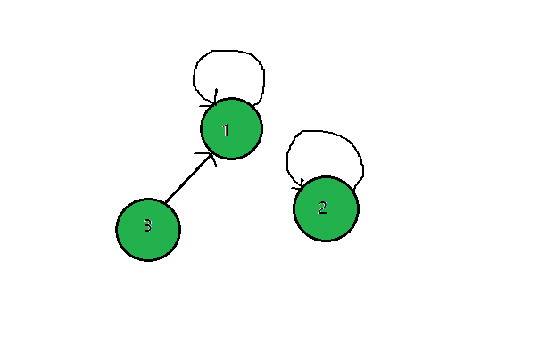
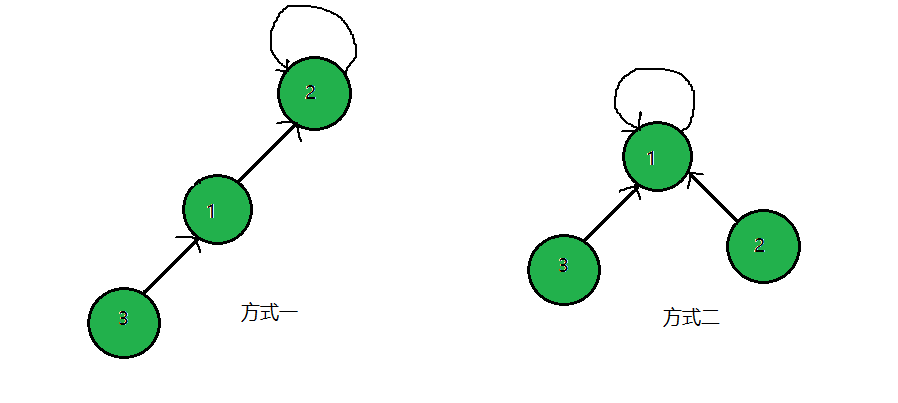

在一些有N个元素的集合应用问题中，初始状态我们让单个元素单独构成单个集合，然后按一定顺序将属于同一组的元素集合合并，期间反复检查某个元素是否位于某一集合。对于这类问题，通常我们采用并查集来解决。
1.并查集的概念
并查集是一种树形的数据结构，用于处理一些不相交集合（Disjoint Sets）的合并及查询问题。由于并查集通常而言存在着多个集合，因为通常可以用树形结构组成的森林来表示。
2.并查集的基本操作
- 初始化：
并查集将每个元素初始化为其所在的集合，这一步骤就是并查集的初始化过程
- 查找：查找元素所在的集合，对应于树形结构的操作即上溯找到元素的根节点
- 合并：将两个元素所在的集合合并使其成为同一集合
3.并查集的合并优化
考虑一下合并两个子集合的场景。如下图所示：

可以有两种合并方式（如下图），显然方式二要优于方式一，因为对于方式二来说，当查找根节点时，子节点分别各只需一步。而对于方式一，则一共需要三步。因此在合并子集合时，应该将树高小的集合往树高大的集合身上合并，使其成为树高大的集合的子树，这样可以缩小合并后的树的总高，优化了查找效率。

4.代码实现
这里给出Java语言版的并查集代码实现
1
2
3
4
5
6
7
8
9
10
11
12
13
14
15
16
17
18
19
20
21
22
23
24
25
26
27
28
29
30
31
32
33
34
35
36
37
38
39
40
41
42
43
44
45
46
47
| public class UnionFind {
private int[] roots;
public UnionFind(int N) {
roots = new int[N];
for (int i = 0; i < N; ++i) {
roots[i] = i; //初始化
}
}
private int findRoot(int i) {
int root = i; //根节点
while (roots[root] != i) {
root = roots[root];
}
//在查找的过程中进行路径压缩
while (i != roots[i]) {
int tmp = roots[i];
roots[i] = root;
i = tmp;
}
return root;
}
/**
* 判断两个元素是否存在于同一集合
* @param p
* @param q
* @return
*/
public boolean isConnected(int p, int q) {
return findRoot(p) == findRoot(q);
}
/**
* 合并两个元素所在的子集合
* @param p
* @param q
*/
public void union(int p, int q) {
int proot = findRoot(p);
int qroot = findRoot(q);
roots[proot] = qroot;
}
}
|
{kind=link}
{kind=link}